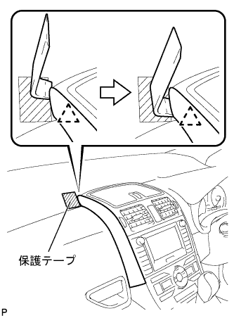
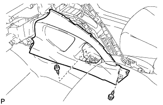
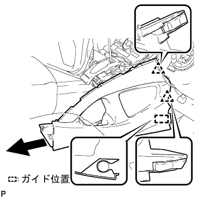
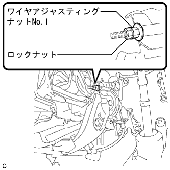
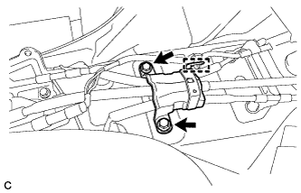
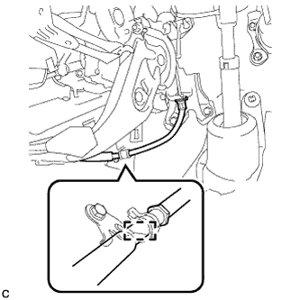

Parking Brake Control Pedal Assembly Removal |
)| 1. Remove Instrument Panel Airbag Assembly LWR NO.1 |
for reference.| 2. Remove Console Box Assembly RR |
for reference.| 3. Remove Instrument Panel Finish Panel End RH |
 |
Apply protective tape to the positions shown in the illustration.
Insert a moulding remover and move it to near the clip engagement as shown in the illustration.
 |
As shown in the illustration, pull the moulding remover with both hands in the direction of the arrow to disengage the clip.
 |
Disengage the 3 clips and remove the instrument panel finish panel end RH.
| 4. Remove Instrument Panel Finish Panel End LH |
 |
Apply protective tape to the positions shown in the illustration.
Insert a moulding remover and move it to near the clip engagement as shown in the illustration.
 |
As shown in the illustration, pull the moulding remover with both hands in the direction of the arrow to disengage the clip.
Disengage the 3 clips and remove the instrument panel finish panel end LH.
| 5. Remove Shift Lever Knob |
 |
Turn the shift lever knob in the direction of the arrow shown in the illustration to remove it.
| 6. Remove Position Indicator Housing Assembly |
 |
As shown in the illustration, using a moulding remover, disengage the 3 claws.
 |
Disengage the 6 claws.
Disconnect the connector and remove the position indicator housing assembly.
| 7. Remove Instrument Cluster Finish Panel Assembly Center NO.1 |
 |
Remove the 2 screws <C>.
 |
Disengage the 6 clips and 4 claws, and remove instrument cluster finish panel assembly center No.1.
| 8. Remove Console Box Insert |
 |
Disengage the 3 claws.
Disengage the guide and remove the console box insert.
| 9. Remove Console Box Insert FR NO.2 |
 |
Disengage the 3 claws.
Disengage the guide and remove console box insert FR No.2.
| 10. Remove Box Bottom Mat |
| 11. Remove Instrument Panel Under Tray |
 |
Using a flat-tipped screwdriver wrapped with protective tape, disengage the 4 claws and remove the instrument panel under tray.
| 12. Remove Instrument Panel Finish Panel Lower NO.1 |
 |
Remove the 2 screws <C>.
 |
Disengage the 4 claws and 2 guides.
 |
Pull in the direction of the arrow in the illustration to disengage the 2 clips and guide, and remove instrument panel finish panel lower No.1.
| 13. Remove Instrument Panel Finish Panel Lower NO.2 |
 |
Remove the 2 screws <C>.
 |
Pull in the direction of the arrow in the illustration to disengage the 2 clips and guide, and remove instrument panel finish panel lower No.2.
| 14. Loosen Wire Adjusting Nut NO.1 |
 |
Remove the lock nut.
Loosen wire adjusting nut No.1.
| 15. Remove Cable Support Bracket Sub-assembly |
 |
Detach the wire harness clamp from the cable support sub-assembly.
Remove the 2 bolts and remove the cable support sub-assembly.
| 16. Disconnect Parking Brake Cable Assembly NO.1 |
 |
Disconnect parking brake cable assembly No.1 from parking brake pull rod sub-assembly No.1 as shown in the illustration.
| 17. Remove Parking Brake Control Pedal Assembly |
 |
Detach parking brake cable assembly No.1 from the clamp.
 |
Remove the 2 bolts and disconnect parking brake cable assembly No.1 from the vehicle.
Detach parking brake cable assembly No.1 from the clamp.
 |
Disconnect the parking brake switch assembly connector.
Detach the wire harness clamp.
 |
Remove the 2 bolts and nut, and remove the parking brake control pedal assembly.